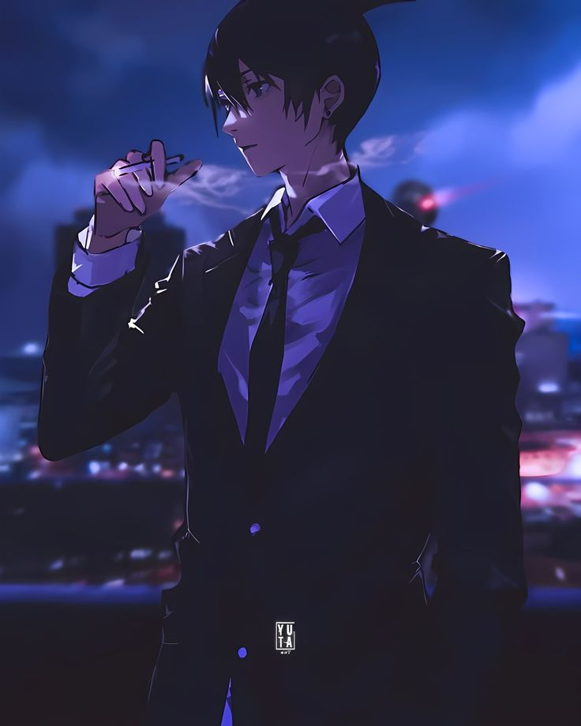

Chainsaw Man is a 12-episode anime television series by Japanese animation studio MAPPA, based on the manga by Tatsuki Fujimoto. The story follows Denji, a poor young man who fuses with his pet devil, Pochita, becoming the titular "Chainsaw Man". He joins the Public Safety Devil Hunters, a government agency dedicated to fighting devils, and his simple desires, such as food and comfort, drive the plot. The series is known for its dark fantasy and horror elements, intense action, and complex characters, blending genres and themes of tragedy, family, and love. [1, 2, 3, 4, 5, 6]
This video explains the world of Chainsaw Man and its devils:
Key details about the Chainsaw Man anime:
• Studio: MAPPA [1, 2]
• Director: Ryū Nakayama [1]
• Music Composer: Kensuke Ushio [1]
• Genre: Action, Comedy, Horror, Dark Fantasy [1]
• Premise: A young man, Denji, left for dead, is resurrected as a devil-human hybrid with chainsaws after merging with his devil dog, Pochita. [3, 4, 8]
• Plot: Denji is recruited into an organization of devil hunters and navigates a world where devils are born from human fears. His simple motivations and the complex situations he faces drive the story. [4, 5]
• Key Characters:
• Denji / Chainsaw Man: The protagonist with chainsaw limbs. [5]
• Pochita: Denji's pet devil and companion. [4]
• Makima: A manipulative and powerful figure who recruits Denji. [5]
• Aki Hayakawa: A devil hunter seeking revenge. [5]
• Power: A Blood Devil fiend who becomes Denji's friend. [5, 9]
• Broadcast: The first season aired from October 12 to December 28, 2022, on TV Tokyo and affiliated networks. [1, 2]
• Themes: The series explores themes of tragedy, love, relationships, and perseverance within the context of a battle-shonen setting. [6]
• Sequel: An anime movie, Chainsaw Man – The Movie: Reze Arc, was announced after the first season's conclusion. [1, 10]
AI responses may include mistakes.
[1]click for watch web 1
[2] click for watch web 1
[3]click for watch web 1
[4]click for watch web 1
[5]click for watch web 1
[6]click for watch web 1
[7] click for watch web 1
[8]click for watch web 1
[9]click for watch web 1
[10]click for watch web 1
Not all images can be exported from Search.